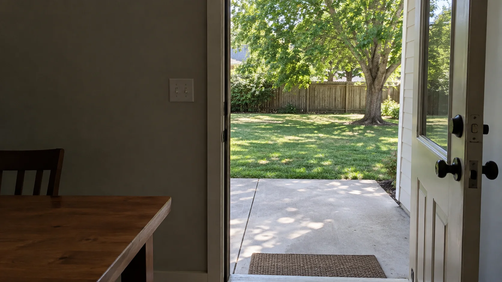

Divorced dad?
Does an argument with your ex stay with you all afternoon?
Work through conflict after divorce without letting it take over your time with your kid.
You may have a good reason to disagree.
The problem is when the conversation ends and the replay keeps going.

Deal with the disagreement without losing the afternoon.
For divorced dads
The handover
is over.
The argument
isn't.
You've disagreed about when your kid goes back. Now you're together, but you're still thinking about the argument.
How do you deal with it without losing more of your time together?
What still needs your attention?
The schedule
Deciding when your
kid goes back.
The argument
Going over what
was said.
Start with the question of when.
You may have a good reason to disagree. Pausing before you reply gives you room to say what works for you, rather than argue about everything that happened before.
Aware
Notice that you're still arguing in your head, even though the handover is over.
Release
Pause before sending another message. Take a breath and let your shoulders drop.
Choose & Commit
Decide what you can agree to, reply to the question, and follow through.
ARC: Aware / Release / Choose & Commit. Jay and Winnie's shared practice.
That can sound straightforward until you're angry. You may know how you'd like to respond and still send the message you regret.
That's why this takes practice outside the argument: noticing tension, pausing before reacting, and bringing your attention back to the person in front of you.

Jay Dubois, PhD
Author of Stop Leaking Power.
Co-founder of Heart Center LA.
I thought I was the good guy.
Then I saw the video.
My wife at the time filmed me during an argument. I thought I was making my point. On screen, I saw myself using anger to control her. My first instinct was to delete the video.
I could recognize the pattern and still repeat it. Even after I learned to stop raising my voice, I could bury resentment or pull away when I didn't like what I was hearing. Changing meant working on those reactions, too.
What changed in everyday life
When Winnie's garage door broke, we weren't living together yet. My first thought was that it wasn't my job. I caught that thought, found someone to repair the door, negotiated the price, and saw the job through.
It was a small job. But I had followed through instead of finding a reason to leave it to someone else. That gave me something concrete to repeat.
ARC grew through my relationship with Winnie and the work she was already doing. Noticing a reaction, pausing, and choosing what to do next became our shared practice. It's the work we bring to Heart Center LA.
More about Jay and the bookDifficult conversations
after divorce
Work through the one you keep having.
A change to the schedule. A request you want to refuse. A disagreement that follows you into the rest of your day.
Bring a situation from your own life. You and Jay will examine where the conversation gets stuck, practice how you want to respond, and review what happens when you try it.
Four private sessions with Jay
60 minutes each, meeting weekly.
$800USD total for all four sessions
- A written plan for the conversation you need to have.
- A short ARC practice to use before responding.
- Time to review what happened and adjust your approach.
Individual work. No group participation required.
Ask Jay about the sessionsWhat happens in the four sessions?
Understand the recurring argument
Work through a recent disagreement. Separate what needed resolving from what triggered your reaction. Identify one response to practice.
Prepare for the next conversation
Rehearse saying what you need and hearing disagreement. Use a brief breathing or movement practice before trying again.
Review what happened
Look at where you followed your plan and where you reacted. Adjust your approach. If the conversation hasn't happened, rehearse a realistic scenario.
Make it repeatable
Apply the same process to another situation. Leave with a personal ARC practice and a written plan for continuing on your own.
Coaching focuses on your response. It does not provide therapy, mediation, or legal advice, or guarantee agreement from the other parent.
Practicing at Heart Center LA
Jay and Winnie use breathing, qigong movement, and reflection to work on those skills. The aim is to notice how you react and practice a different response before you're in another difficult conversation.
Ask about working with Jay.
Write to Jay